Zanim zaczniesz
Aplikacja jest dodatkiem do Twojego konta NoviCloud. Potrzebujesz włączonego modułu API i hasła API — to nie hasło, którym logujesz się do NoviCloud w przeglądarce.
Nie ma tu osobnego serwera: dane pobierane są wprost z Twojego NoviCloud i zostają na telefonie. Dzięki temu raporty i dokumenty przeglądasz także bez internetu.
Edycja towarów wymaga subskrypcji „API W”, a karty lojalnościowe — modułu PC-Loyalty w NoviCloud.
Zrzuty pochodzą z konta demonstracyjnego, więc kwoty i nazwy towarów są przykładowe.
Pierwsze uruchomienie
Połączenie z kontem robisz raz — potem aplikacja pamięta dane i sama odświeża informacje w tle. Jeśli nie masz jeszcze hasła API, zacznij od pomocy „Jak się zalogować?”, która prowadzi przez ustawienia w NoviCloud.
↑ Spis treści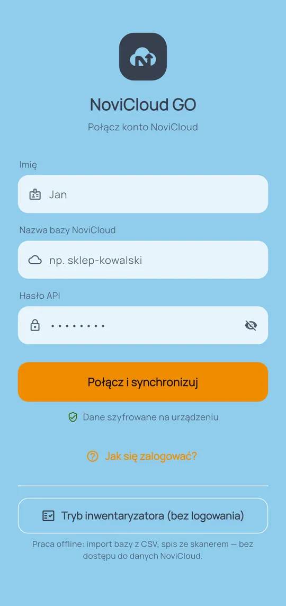
Ekran logowania
- W polu Nazwa bazy NoviCloud wpisz nazwę swojej bazy danych.
- W polu Hasło API wpisz hasło dostępu ustawione w NoviCloud.
- Naciśnij Połącz i synchronizuj — aplikacja pobierze dane i otworzy pulpit.
- Pole Imię jest opcjonalne — służy tylko do powitania.
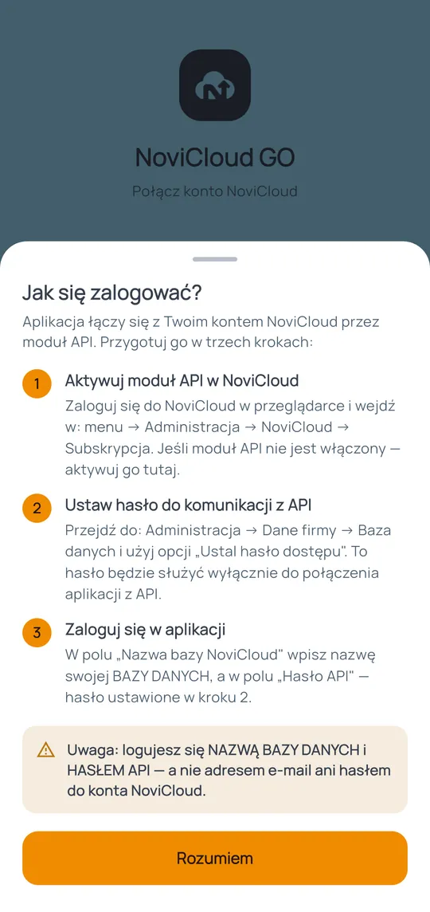
Pomoc: „Jak się zalogować?”
- Instrukcja w trzech krokach: włączenie modułu API, ustawienie hasła dostępu i zalogowanie w aplikacji.
- Uwaga: logujesz się nazwą bazy danych i hasłem API, a nie adresem e-mail i hasłem do NoviCloud.
- Dane logowania są szyfrowane i zostają wyłącznie na Twoim telefonie.
Praca bez logowania — tryb inwentaryzatora
Tryb do spisu z natury na urządzeniu bez dostępu do NoviCloud — na przykład na telefonie pracownika w magazynie. Działa offline: wczytujesz bazę towarów z pliku CSV, zliczasz towar skanerem, a wynik eksportujesz.
↑ Spis treści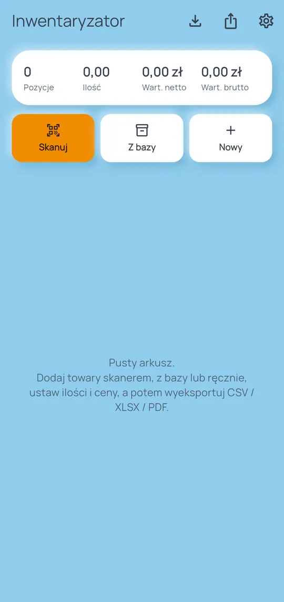
Pusty arkusz spisu
- Wejście: przycisk Tryb inwentaryzatora na ekranie logowania.
- U góry liczniki arkusza: pozycje, ilość oraz wartość netto i brutto.
- Pozycje dodajesz przez Skanuj, Z bazy (z wczytanej listy) lub Nowy (ręcznie).
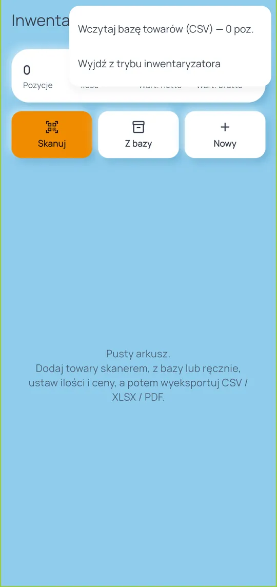
Menu trybu
- Wczytaj bazę towarów (CSV) — dzięki niej skaner rozpoznaje kody i podpowiada nazwy oraz ceny.
- Ikony u góry ekranu to import pliku, eksport arkusza (CSV / XLSX / PDF) i to menu.
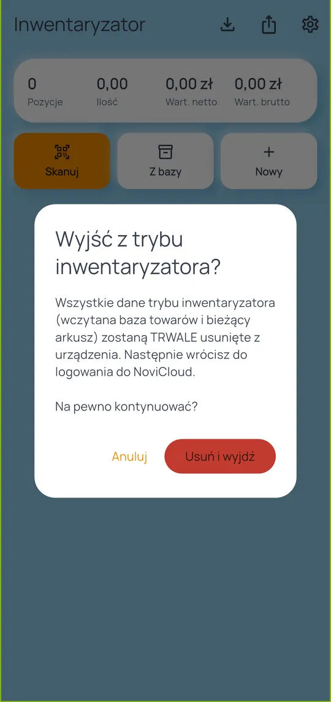
Ostrzeżenie przy wyjściu
- Wyjście z trybu trwale usuwa wczytaną bazę i bieżący arkusz.
- Zanim wyjdziesz — wyeksportuj arkusz, jeśli spis nie jest skończony.
Pulpit — codzienny rzut oka
Pierwszy ekran po zalogowaniu: sprzedaż za wybrany okres, wykres i kafelki szybkich akcji, które ustawiasz pod siebie.
↑ Spis treści
Widok główny
- Karta na górze: utarg brutto za wybrany okres, obok netto i marża.
- Zielona pigułka Aktualne mówi, że dane są świeże.
- Szybkie akcje to skróty — przesuń w bok, aby zobaczyć kolejne, przytrzymaj kafelek, aby go zmienić.
- Ikony nad wykresem przełączają słupki, linię i obszar.
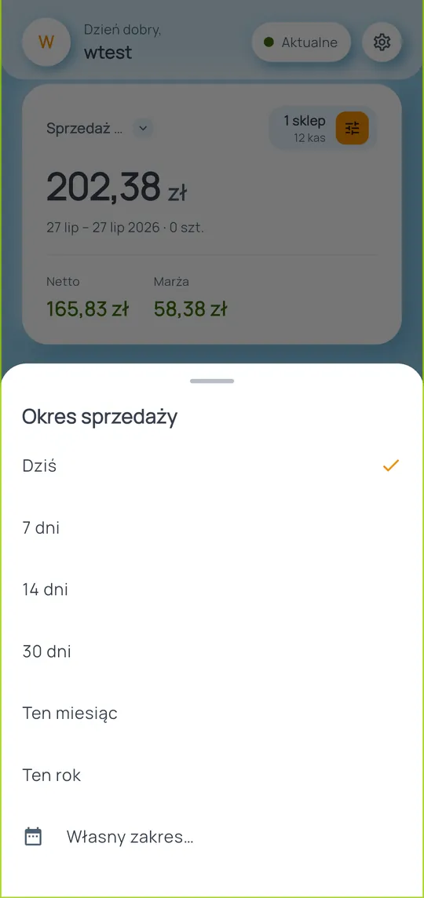
Wybór okresu
- Dotknij napisu Sprzedaż · … u góry karty.
- Wybierz: Dziś, 7 dni, 14 dni, ten miesiąc, ten rok albo własny zakres dat.
- Okres dotyczy kwoty na karcie i wykresu.
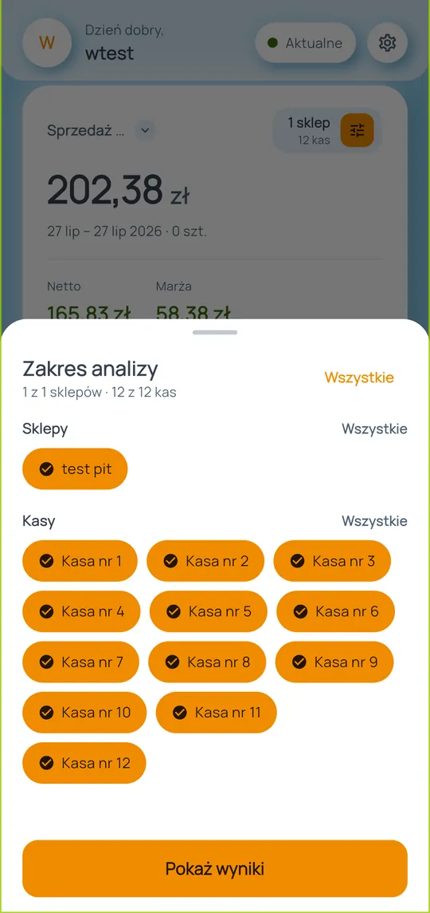
Zakres analizy — sklepy i kasy
- Pigułka „1 sklep / 12 kas” otwiera zakres analizy.
- Zaznacz, które sklepy i kasy mają być liczone — przydatne przy kilku punktach.
- Zakres obowiązuje kwotę na pulpicie, wykres i widget na ekranie telefonu.
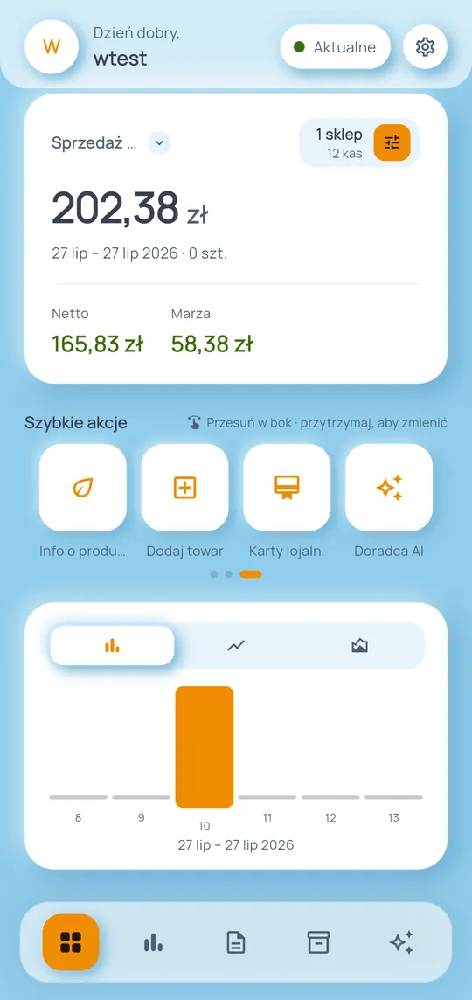
Więcej kafelków
- Kafelki mieszczą się na kilku stronach — przesuwasz je palcem w bok, a kropki pokazują, na której stronie jesteś.
- Na kolejnych stronach są m.in. Info o produkcie, Dodaj towar, Karty lojalnościowe i Doradca.
- Przytrzymanie kafelka pozwala przypisać do niego dowolną funkcję albo zapisany raport.
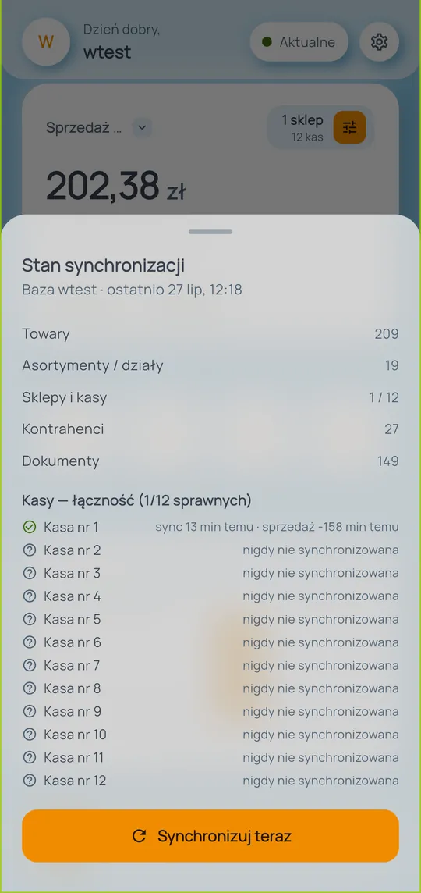
Stan synchronizacji
- Dotknij pigułki stanu, aby zobaczyć, kiedy pobrano dane i ile czego jest w telefonie (towary, dokumenty, kasy).
- Stąd uruchamiasz ręczne odświeżenie, jeśli nie chcesz czekać na automatyczne.
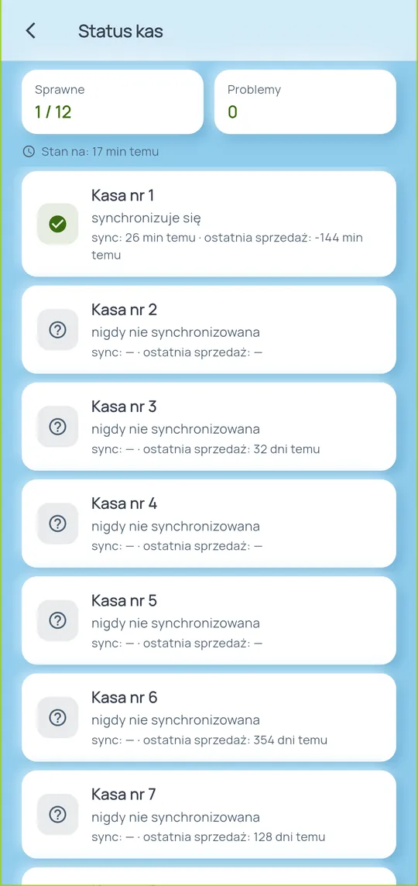
Status kas
- Kafelek Status kas pokazuje, czy kasy komunikują się z chmurą.
- Zielona kropka to kasa synchronizująca się normalnie; żółta i czerwona oznaczają rosnące opóźnienie.
- Progi ostrzeżeń ustawisz w Ustawieniach → Progi alarmów kas.
Raport dnia
Najkrótsza droga do odpowiedzi „co się dzisiaj stało”. Cały raport liczy się z danych już pobranych na telefon, więc działa też bez internetu.
↑ Spis treści
Podsumowanie dnia
- Sprzedaż, liczba dokumentów i średni paragon w jednym miejscu.
- Dwa porównania: z wczoraj i z tym samym dniem tygodnia — drugie jest w handlu miarodajniejsze.
- Sekcja Warto sprawdzić pojawia się, gdy któryś kasjer odstaje od pozostałych rabatami, zwrotami lub anulowanymi paragonami.
- Ikona kalendarza zmienia dzień, ikona udostępniania tworzy PDF.
Dalsza część raportu
- Sprzedaż wg kas i wg kasjerów — gdzie i przez kogo powstał utarg.
- Top towary to najlepiej sprzedające się pozycje dnia.
- Wyżej: zwroty, rabaty oraz wpłaty i wypłaty gotówki z kas.
Raporty sprzedaży
Zakładka Raporty to spis wszystkich zestawień. Każdy ma wybór okresu, większość także filtry i eksport.
↑ Spis treści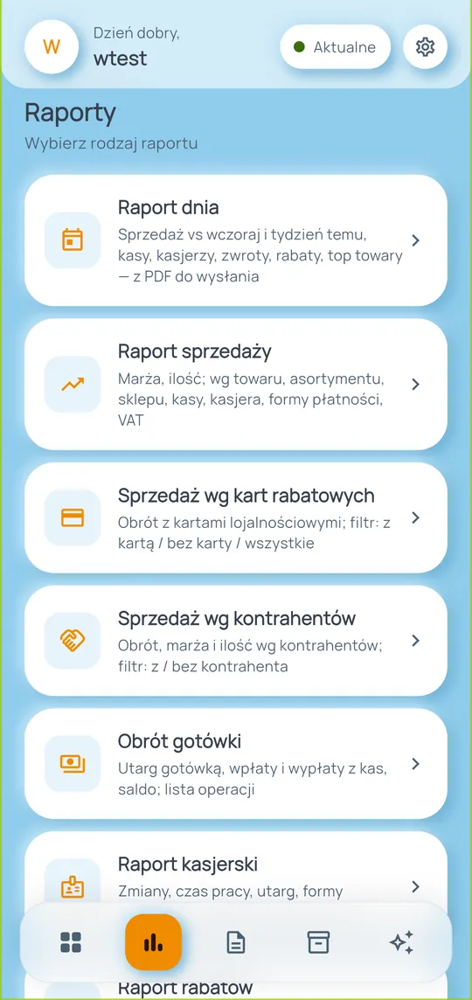
Lista raportów
- Na górze Raport dnia, niżej raporty szczegółowe.
- Każda pozycja ma opis, więc nie musisz zgadywać, co zawiera.
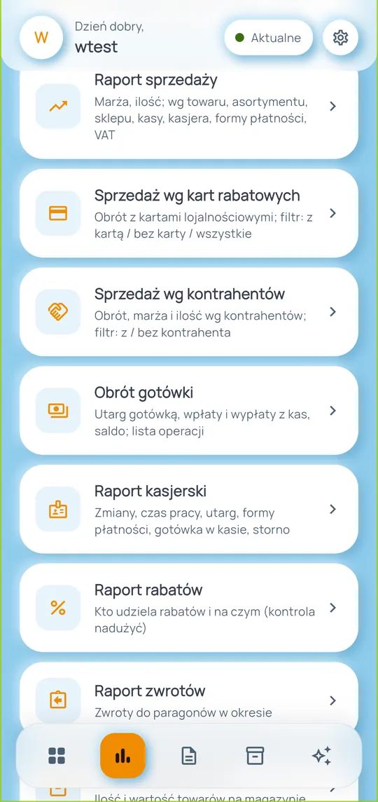
Dalsze raporty
- Po przewinięciu: rabaty, zwroty, stany magazynowe i sprzedaż opakowań.
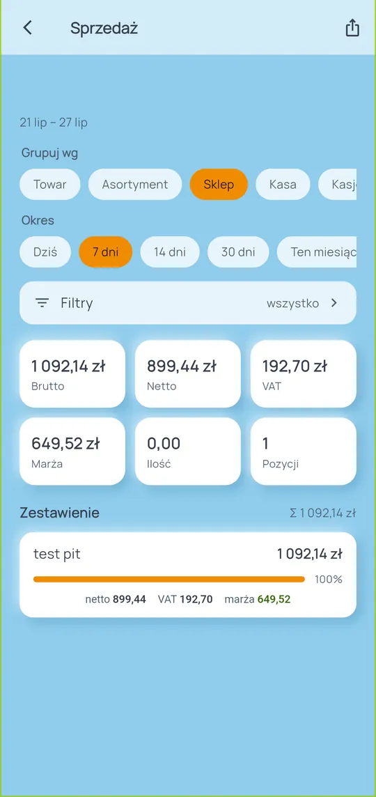
Raport sprzedaży
- Wybierz grupowanie (towar, asortyment, sklep, kasa, kasjer, forma płatności, VAT) i okres.
- Każdy wiersz ma kwotę i udział procentowy w całości.
- To najlepsze miejsce, gdy pytanie brzmi „co się sprzedaje”.
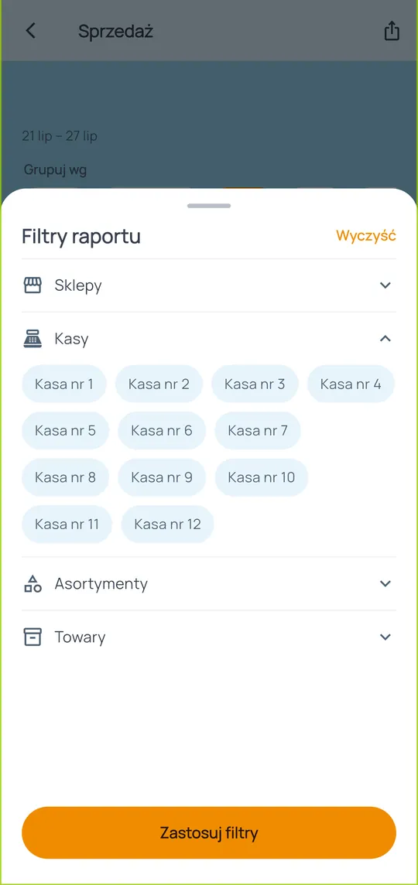
Filtry raportu
- Przycisk Filtry otwiera drzewko: sklepy, kasy, asortymenty i towary (z wyszukiwarką).
- Filtry obowiązują wyniki na ekranie i eksport.
- Liczba aktywnych filtrów pokazuje się na plakietce przy przycisku.
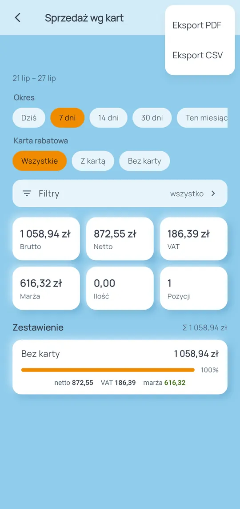
Eksport raportu
- Ikona udostępniania w prawym górnym rogu otwiera wybór formatu.
- PDF nadaje się do wydruku i wysłania mailem.
- CSV otworzysz w Excelu i policzysz własne zestawienia.
Kasa, gotówka i zmiany
Dwa raporty, które odpowiadają na pytania o obsługę i o pieniądze w kasie.
↑ Spis treści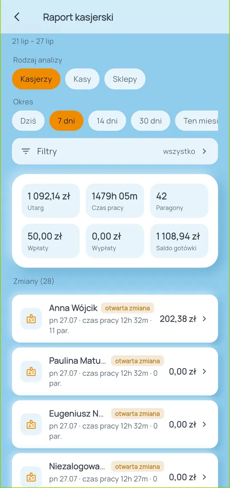
Raport kasjerski
- Przełącznik u góry zmienia analizę na kasjerów, kasy lub sklepy.
- Kafelki: utarg, czas pracy, liczba paragonów i faktur, storna, anulowane.
- Wiersz zmiany rozwiniesz, aby zobaczyć formy płatności oraz wpłaty i wypłaty gotówki.
- Zmiana trwająca dostaje plakietkę „otwarta zmiana”.
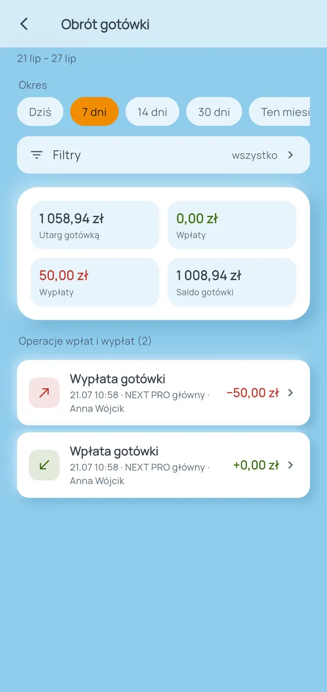
Obrót gotówki
- Cztery kafelki: utarg gotówką, wpłaty, wypłaty i saldo gotówki.
- Niżej lista wszystkich operacji wpłat i wypłat z numerem dokumentu, datą, kasą i kasjerem.
- Przydaje się przy rozliczaniu utargu i sprawdzaniu, kto pobierał gotówkę.
Klienci, rabaty i zwroty
Zestawienia, które pokazują, komu sprzedajesz i gdzie uciekają pieniądze.
↑ Spis treści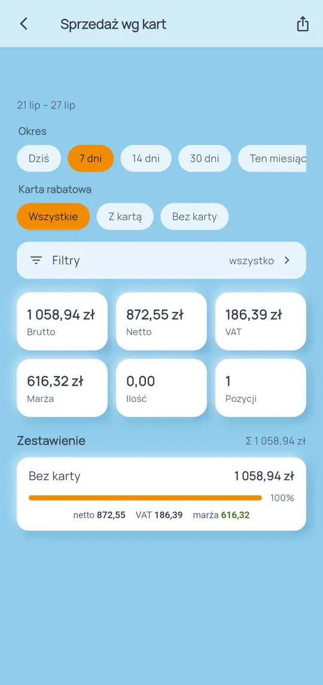
Sprzedaż wg kart rabatowych
- Przyciski Wszystkie / Z kartą / Bez karty decydują, które paragony liczyć.
- Kafelki podają brutto, netto, VAT, marżę, ilość i liczbę pozycji.
- Odpowiada na pytanie, jaka część obrotu idzie na karty lojalnościowe.
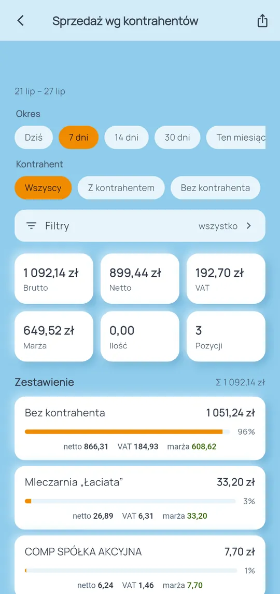
Sprzedaż wg kontrahentów
- Przyciski Wszyscy / Z kontrahentem / Bez kontrahenta oddzielają sprzedaż firmową od detalicznej.
- Lista pokazuje, ile sprzedałeś konkretnym firmom.
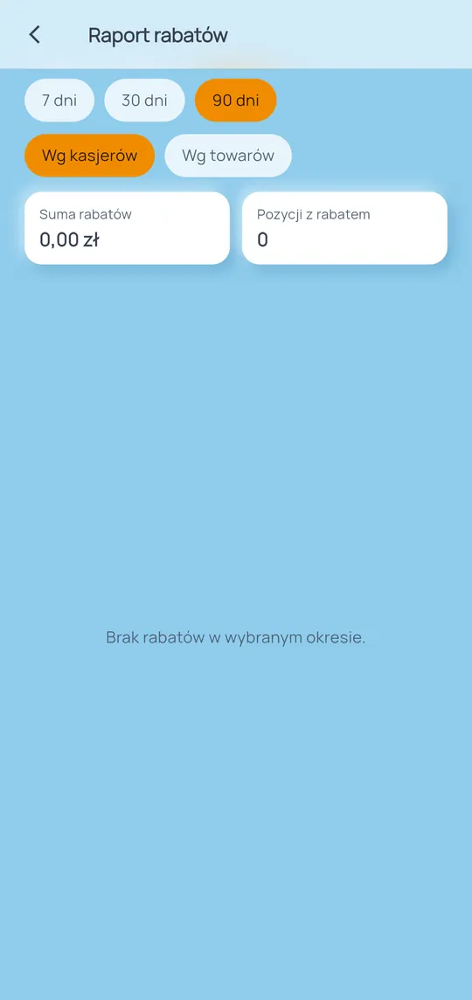
Raport rabatów
- Wybierz okres (7 / 30 / 90 dni) i przełącz Wg kasjerów albo Wg towarów.
- Kafelki podają sumę rabatów i liczbę pozycji z rabatem.
- Narzędzie do kontroli, kto udziela rabatów i na czym.
- Pusta lista znaczy po prostu, że w okresie nie było rabatów.
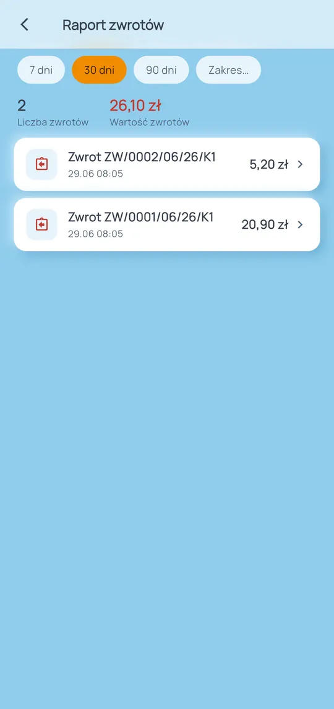
Raport zwrotów
- U góry liczba zwrotów i ich łączna wartość (na czerwono).
- Niżej lista dokumentów zwrotu z numerem, datą i kwotą.
- Wzrost zwrotów u jednej osoby warto zestawić z Raportem dnia.
Magazyn i braki
Stan magazynu z NoviCloud, gotowy do sprawdzenia na miejscu przy półce.
↑ Spis treści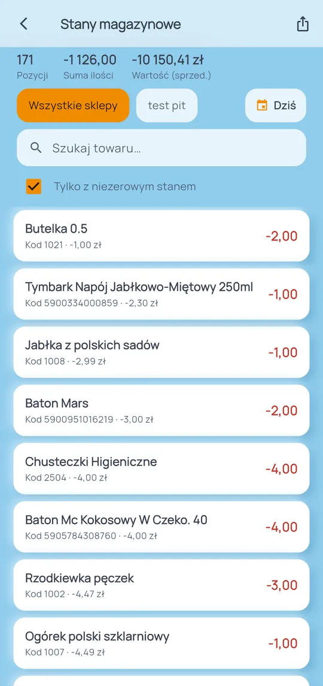
Stany magazynowe
- Liczba pozycji, suma ilości i wartość w cenach sprzedaży.
- Wybierasz sklep i datę stanu, a polem Szukaj towaru odnajdujesz konkretny produkt.
- Znacznik pozwala pokazać tylko towary z niezerowym stanem.
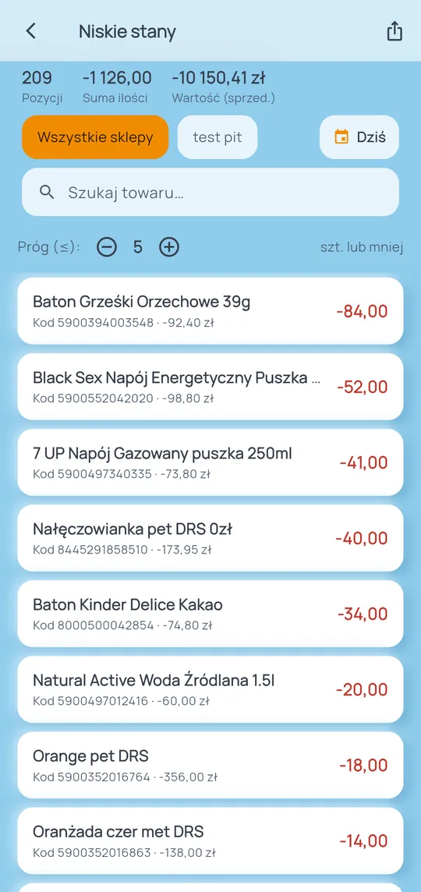
Niskie stany / braki
- Ten sam magazyn, ale posortowany od największych braków — lista do domówienia.
- Suwakiem Próg (≤) ustawiasz, od ilu sztuk towar ma się pojawiać na liście.
- To osobna pozycja na liście raportów, nie przełącznik w stanach.
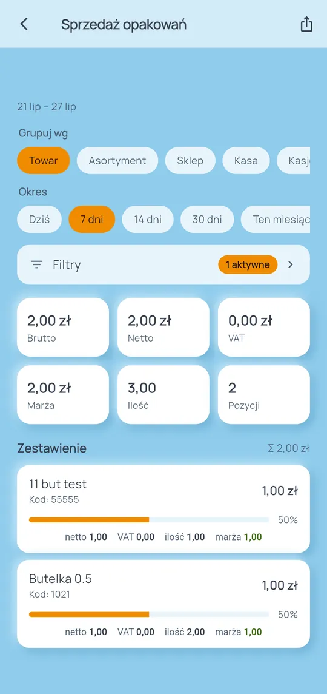
Sprzedaż opakowań
- Raport zawężony do towarów typu „opakowanie” (kaucje, butelki zwrotne).
- Aplikacja sama wstawia filtr na te towary — widać to po plakietce przy przycisku Filtry.
- Dostępne są wszystkie grupowania i eksport jak w raporcie sprzedaży.
Dokumenty
Podgląd wystawionych dokumentów — paragonów, faktur, korekt, przyjęć i wydań. Lista czyta z pamięci telefonu, więc działa bez sieci.
↑ Spis treściLista dokumentów
- Szukaj po numerze, typie lub kwocie; zawężaj okres i typ dokumentu.
- Nagłówki dni pokazują sumę sprzedaży danego dnia.
- Lista doczytuje się w miarę przewijania.
Szczegóły dokumentu
- Pozycje, rozbicie VAT i formy płatności.
- U góry wyraźna informacja, że to podgląd, a nie dokument fiskalny.
- Dokument możesz wyeksportować do PDF jako kopię do wysłania.
Towary i skaner
Katalog towarów z Twojego NoviCloud wraz z cenami i stanami, plus skaner kodów do sprawdzania towaru w kilka sekund.
↑ Spis treści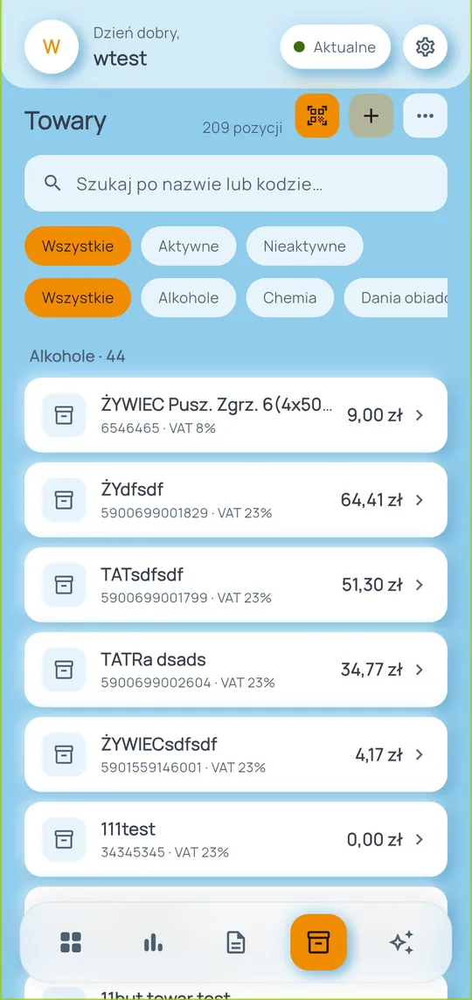
Katalog towarów
- Szukaj po nazwie lub kodzie; filtruj po statusie i dziale.
- Liczba pozycji widoczna jest u góry ekranu.
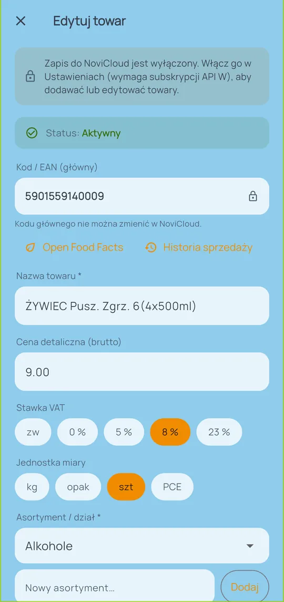
Karta towaru
- Cena detaliczna, stawka VAT, jednostka miary, dział i kod EAN.
- Skróty prowadzą do historii sprzedaży i informacji o produkcie.
- Edycja i dodawanie towarów wymaga subskrypcji „API W”.

Skaner kodów
- Skieruj telefon na kod kreskowy — zobaczysz nazwę, cenę, stan i VAT.
- Skanuj dalej pozwala sprawdzać kolejne towary bez wychodzenia z ekranu.
- Ikona błyskawicy włącza doświetlenie.
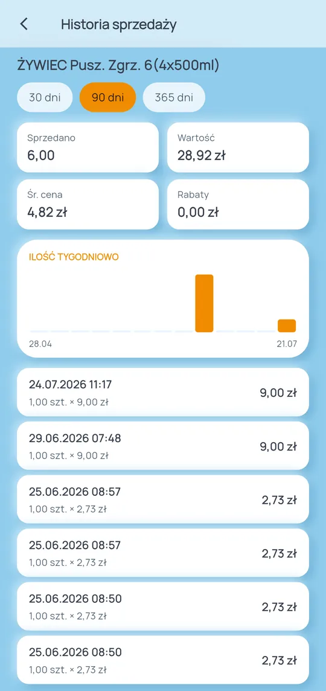
Historia sprzedaży towaru
- Ile sztuk i za ile sprzedał się dany towar w ostatnich 90 dniach, wraz ze średnią ceną i sumą rabatów.
- Wykres tygodniowy pokazuje, czy sprzedaż rośnie, czy siada.
- Dobra odpowiedź na pytanie „czy warto to jeszcze zamawiać”.
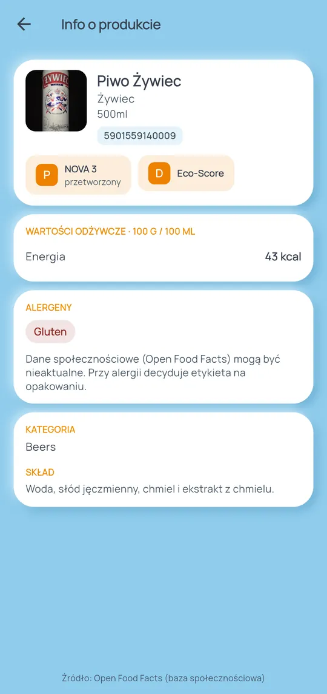
Info o produkcie
- Po kodzie EAN aplikacja pobiera opis z ogólnodostępnej bazy Open Food Facts.
- Widzisz zdjęcie, markę, pojemność, wartości odżywcze i alergeny.
- Przydaje się, gdy klient pyta o skład, a opakowania nie ma pod ręką.
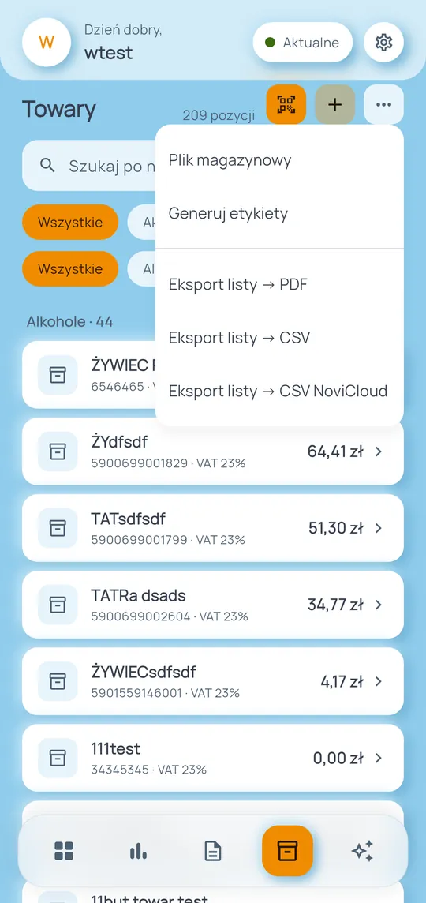
Menu narzędzi katalogu
- Ikona z trzema kropkami otwiera narzędzia dotyczące całej bazy.
- Znajdziesz tu plik magazynowy, generowanie etykiet oraz eksporty listy towarów do PDF, CSV i Excela.
Etykiety cenowe i remanent
Dwa narzędzia do pracy przy półce i w magazynie — oba dostępne z menu narzędzi w zakładce Towary.
↑ Spis treści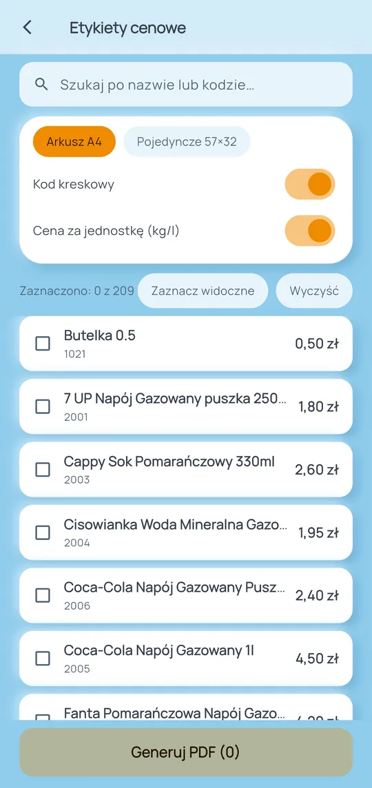
Etykiety cenowe
- Wybierz format: arkusz A4 (wiele etykiet na kartce) albo pojedyncze 57×32 mm na drukarkę etykiet.
- Przełącznikami decydujesz, czy na etykiecie ma być kod kreskowy i cena za jednostkę.
- Towary dobierasz wyszukiwarką; „Zaznacz widoczne” dodaje całą listę.
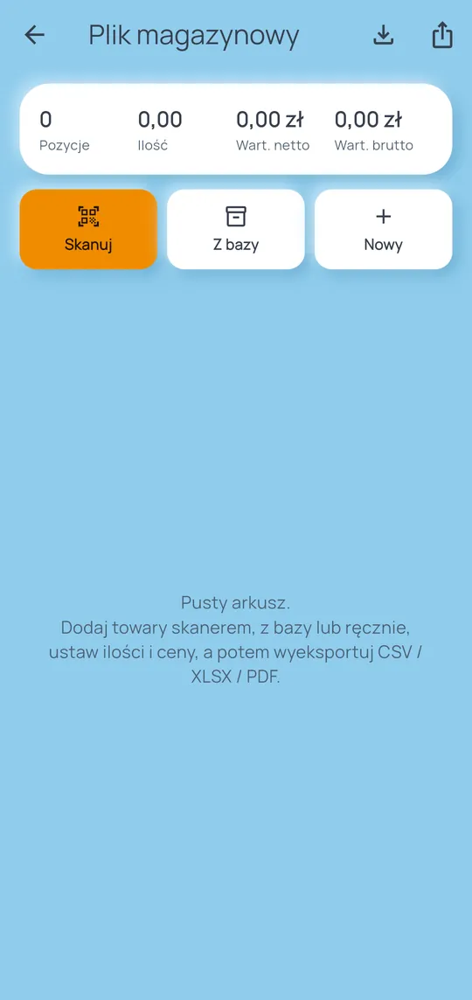
Plik magazynowy (remanent)
- Arkusz roboczy do remanentu i przyjęć towaru; pasek u góry liczy pozycje, ilość i wartość.
- Towary dodajesz skanerem, z bazy albo ręcznie.
- Arkusz zapisuje się sam, a wynik wyeksportujesz do CSV, XLSX lub PDF.
- Ten sam ekran działa też bez logowania — patrz rozdział 2.
Karty lojalnościowe
Kartoteka kart klientów. Funkcja wymaga modułu PC-Loyalty w NoviCloud — bez niego aplikacja wyraźnie o tym poinformuje.
↑ Spis treści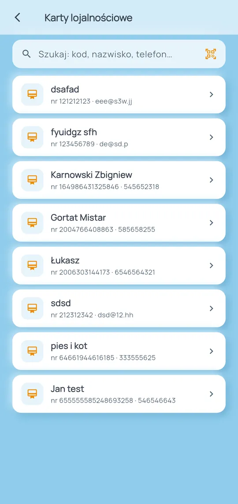
Lista kart
- Każdy wiersz to posiadacz karty oraz jej numer i kontakt.
- Pole Szukaj obsługuje kod, nazwisko i telefon, a ikona skanera pozwala odnaleźć kartę przez zeskanowanie.
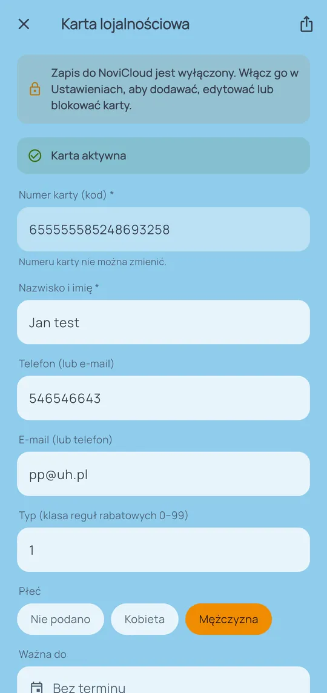
Szczegóły karty
- Status karty, numer (którego nie da się już zmienić), dane posiadacza, typ reguł rabatowych, data ważności.
- Kartę można zablokować — blokada działa od razu na kasach.
- Zapis zmian wymaga włączonego zapisu do NoviCloud.
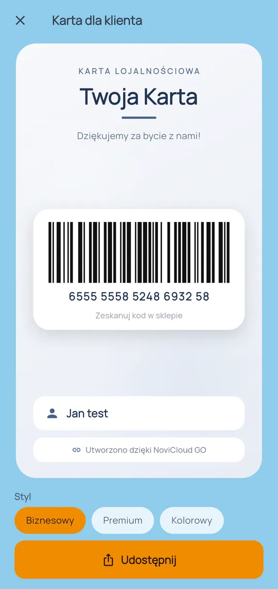
Karta dla klienta
- Gotowa do wydania karta w formie graficznej, z dużym kodem kreskowym.
- Podgląd zmienia się na żywo, a przyciski u dołu przełączają styl.
- Wynik zapiszesz jako obrazek albo PDF — do wydruku lub wysłania klientowi.
Doradca
Podpowiedzi liczone na telefonie — bez opłat, bez internetu i bez wysyłania danych na zewnątrz. Osobno, dobrowolnie, można dołączyć czat w języku naturalnym.
↑ Spis treści
Na dziś i prognozy
- Karta Na dziś daje prognozę i ostrzega, gdy trend spada.
- Każda liczba ma rozwijane „Dlaczego?” z pełnym wyliczeniem — możesz sprawdzić, skąd się wzięła.
- Alerty zwracają uwagę na sytuacje wymagające reakcji.
Analiza ABC
- Towary podzielone według udziału w obrocie: klasa A daje 80% obrotu, B kolejne 15%, C resztę.
- Praktyczny wniosek: braki w klasie A bolą najszybciej.
- Przy włączonej gospodarce magazynowej dochodzą sugestie zamówień.
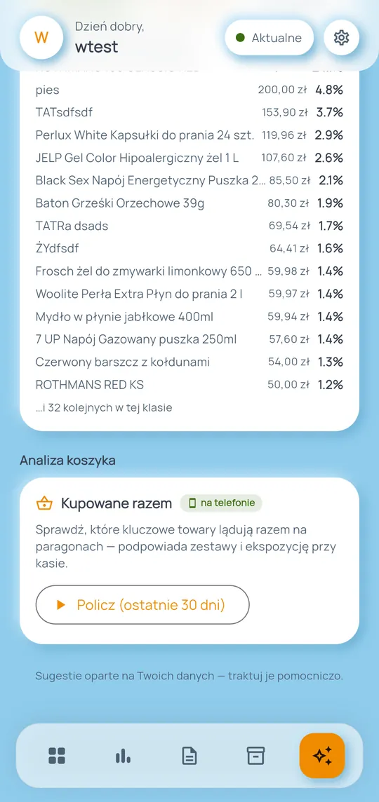
Analiza koszyka
- Karta Kupowane razem sprawdza, które towary trafiają na te same paragony.
- Z tego wychodzą pomysły na zestawy i na ekspozycję przy kasie.
- Liczenie uruchamiasz przyciskiem — nie chodzi w tle, żeby nie zużywać baterii.
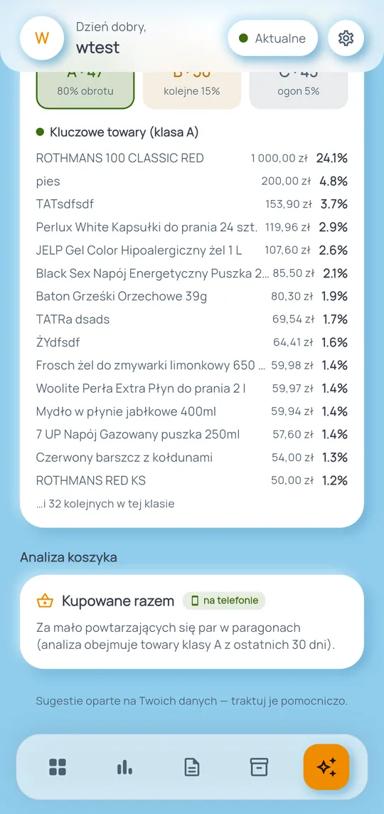
Wynik analizy koszyka
- Aplikacja przeszukuje paragony z ostatnich 30 dni pod kątem towarów klasy A.
- Przy małej liczbie paragonów uczciwie odpowie, że brakuje powtarzających się par — zamiast wymyślać wnioski.
- Im dłużej zbierasz sprzedaż, tym sensowniejsze pary.
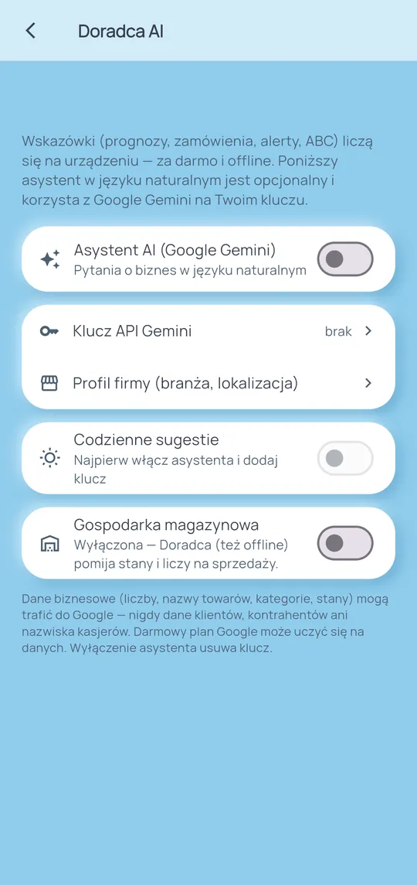
Ustawienia Doradcy
- Wskazówki, prognozy i analiza ABC działają zawsze — za darmo i bez internetu.
- Przełącznik Asystent AI dokłada czat w języku naturalnym; wymaga własnego, darmowego klucza Google Gemini.
- Tu też włączasz gospodarkę magazynową (sugestie zamówień) i podajesz profil firmy, dzięki któremu porady są trafniejsze.
Czat z asystentem (opcjonalnie)
Po włączeniu asystenta i wpisaniu własnego klucza Google Gemini możesz pytać o swój biznes normalnym językiem. Asystent sam wykonuje potrzebne raporty, a każde jego działanie widzisz w rozmowie. Do modelu trafiają wyłącznie liczby i nazwy towarów — nigdy dane klientów.
↑ Spis treści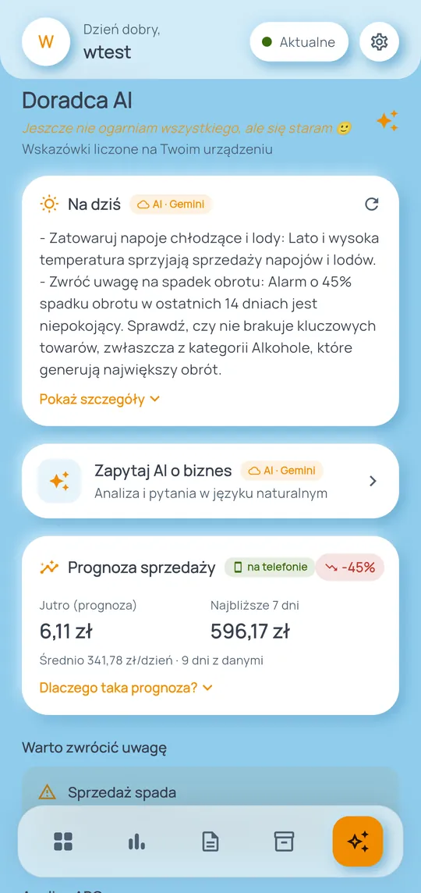
Porada „Na dziś”
- Po włączeniu asystenta karta Na dziś dostaje plakietkę „AI · Gemini” i konkretne wskazówki na dzisiaj.
- Porady biorą pod uwagę Twoją sprzedaż, sezon i alerty — na przykład podpowiedzą zatowarowanie napojów przy upale albo zwrócą uwagę na spadek obrotu.
- Strzałka w prawym górnym rogu karty przelicza poradę od nowa.
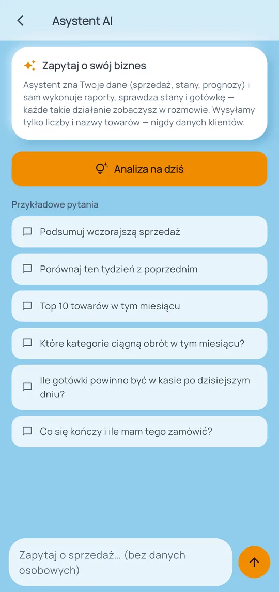
Ekran startowy czatu
- Wejście: kafelek Zapytaj AI o biznes w zakładce Doradca.
- Przycisk Analiza na dziś daje gotowe omówienie bieżącego dnia.
- Niżej przykładowe pytania — wystarczy je stuknąć, nie trzeba nic pisać: „Podsumuj wczorajszą sprzedaż”, „Porównaj ten tydzień z poprzednim”, „Co się kończy i ile mam tego zamówić?”.
- Podpowiedź w polu wpisywania przypomina, żeby nie pytać o dane osobowe.
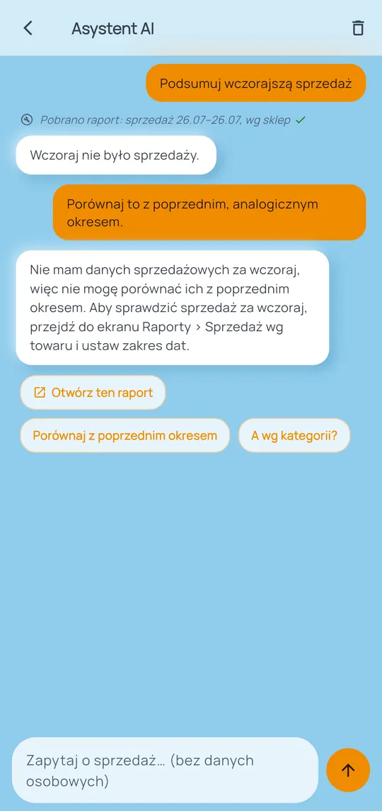
Rozmowa i ślad działań
- Nad odpowiedzią widać, co asystent zrobił — np. „Pobrano raport: sprzedaż 26.07–26.07, wg sklep”. Nic nie dzieje się w ukryciu.
- Pod odpowiedzią: Otwórz ten raport (przenosi do właściwego ekranu) oraz gotowe dopytania.
- Gdy danych nie ma, asystent mówi to wprost i podpowiada, gdzie ich szukać — zamiast wymyślać liczby.
- Kosz w nagłówku czyści rozmowę.
Ustawienia i powiadomienia
Ustawienia otwierasz kołem zębatym na pulpicie.
↑ Spis treści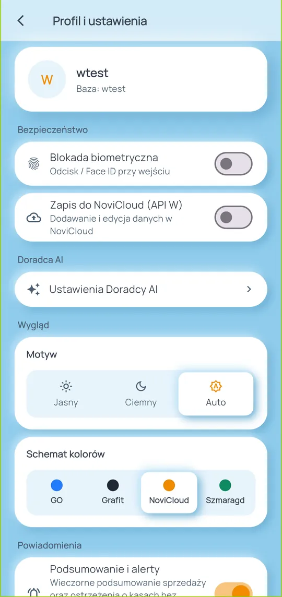
Bezpieczeństwo i wygląd
- Blokada biometryczna — odcisk palca lub Face ID przy wejściu do aplikacji.
- Zapis do NoviCloud — włącz, jeśli masz subskrypcję „API W” i chcesz edytować dane z telefonu.
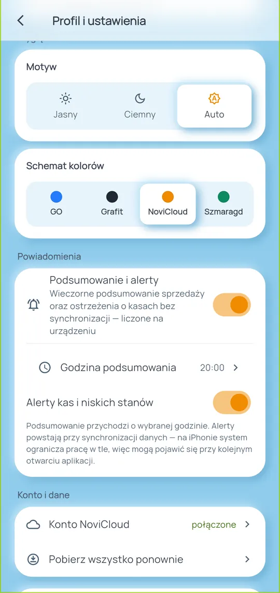
Powiadomienia
- Motyw jasny, ciemny lub systemowy oraz schemat kolorów do wyboru.
- Podsumowanie i alerty — wieczorne podsumowanie sprzedaży o wybranej godzinie oraz ostrzeżenia o kasach bez synchronizacji.
- Powiadomienia powstają w telefonie — nic nie jest wysyłane na zewnątrz, żeby się pojawiły.
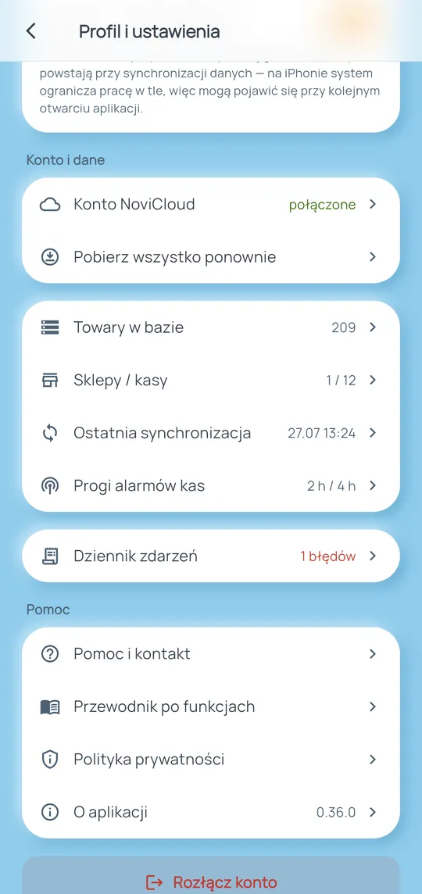
Konto i dane
- Stan połączenia z NoviCloud, liczba towarów, sklepów i kas oraz godzina ostatniej synchronizacji.
- Pobierz wszystko ponownie robi pełne odświeżenie bazy — przydaje się, gdy dane wyglądają niekompletnie.
- Niżej sekcja pomocy: kontakt i przewodnik po funkcjach.
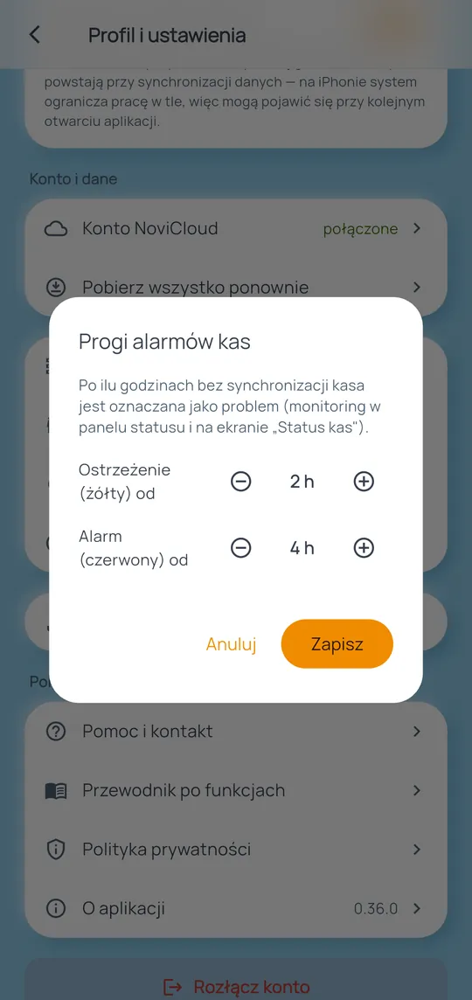
Progi alarmów kas
- Ustawiasz, po ilu godzinach bez synchronizacji kasa ma być zgłaszana.
- Osobno próg ostrzeżenia (żółty) i alarmu (czerwony).
- Te progi decydują o kolorach na ekranie Status kas i o alertach.
Pomoc i diagnostyka
Gdy coś nie działa albo nie wiesz, gdzie czegoś szukać — te trzy miejsca rozwiązują większość sytuacji bez telefonu do wsparcia.
↑ Spis treści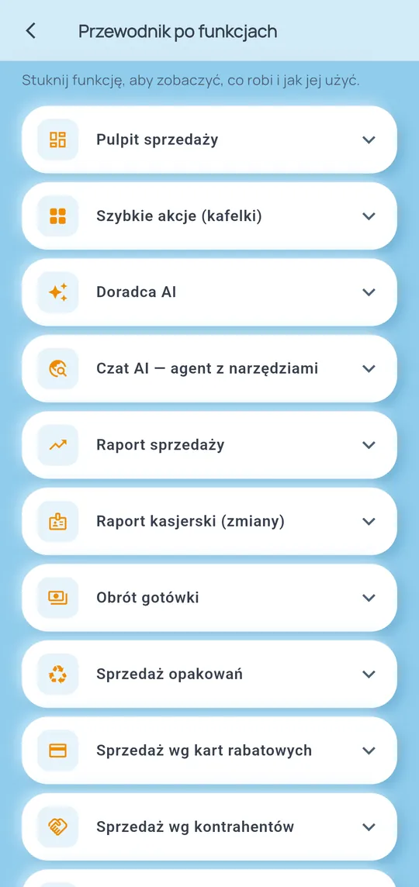
Przewodnik po funkcjach
- Wbudowana ściągawka: lista wszystkich funkcji aplikacji.
- Stuknij funkcję, aby zobaczyć, co robi i jak jej użyć.
- Aktualizuje się razem z aplikacją, więc zawsze opisuje Twoją wersję.
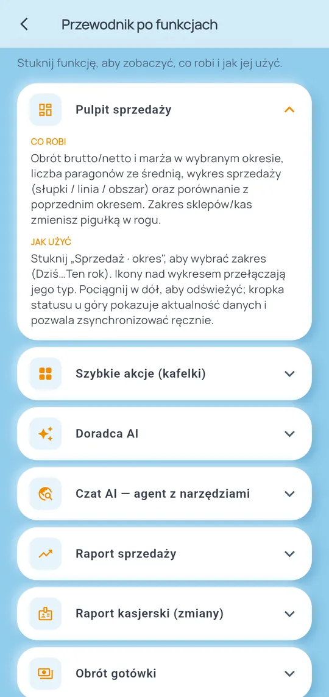
Opis funkcji
- Każdy wpis ma dwie części: Co robi i Jak użyć.
- Druga część podaje konkretne gesty i nazwy przycisków.
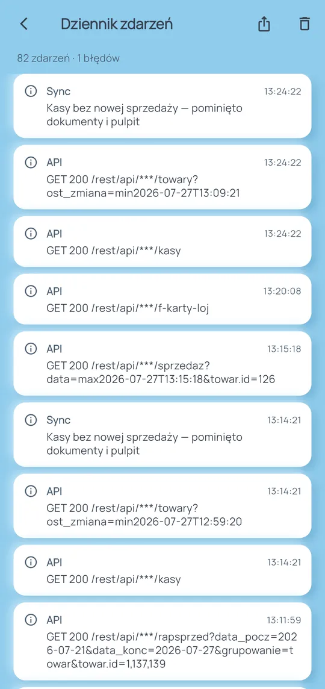
Dziennik zdarzeń
- Techniczny zapis tego, co aplikacja robiła, z liczbą błędów u góry.
- Przy zgłoszeniu problemu udostępnij dziennik — z nim pomoc jest znacznie szybsza.
- Dziennik nie zawiera haseł ani danych osobowych klientów.